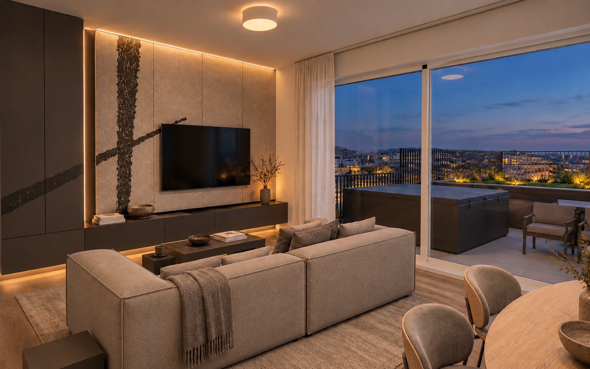
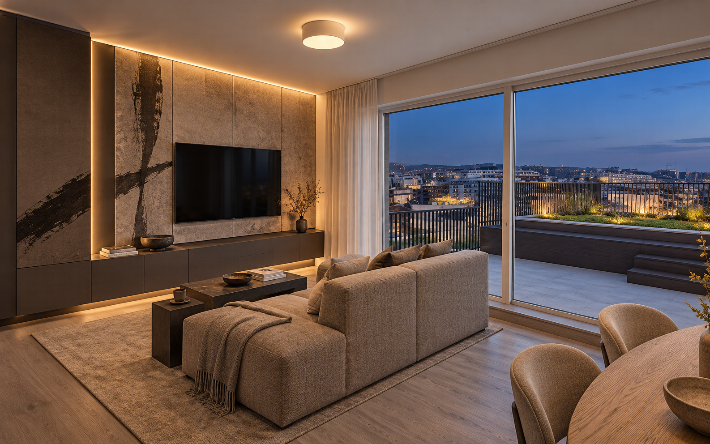
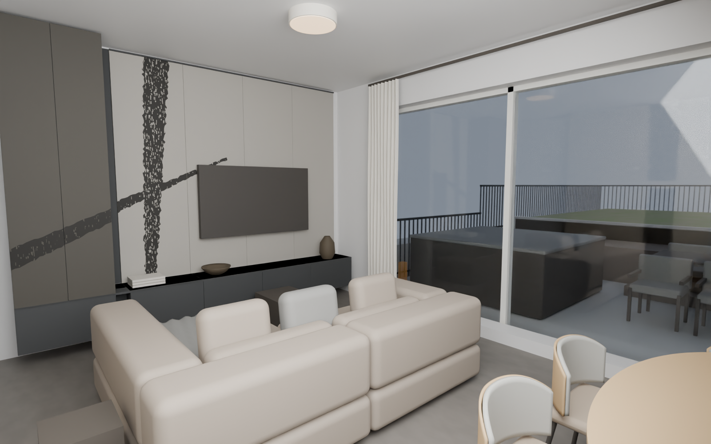

Szélesebb médiafal, valódi köztes sáv, magas függöny, betolt székek. Feltételes látvány: az anyagminta és a készbútorok teljes formaazonossága még nem igazolt.
Teljes projekt előrejelzés: 24 673 390 Ft · 18 milliós célhoz +6 673 390 Ft · külön 2 milliós tartalék.



Méretezett médiafal és anyagjavaslat (PDF) · Részletes eltérések és nyitott feltételek · Élő költségregiszter